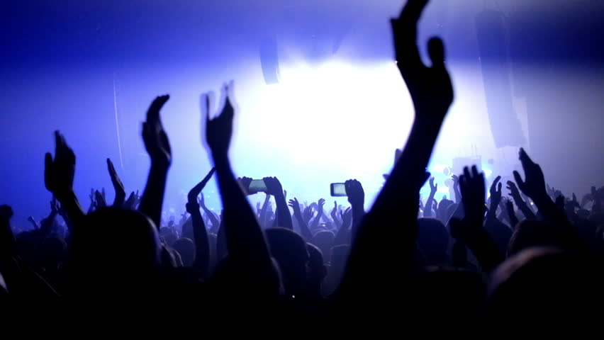

-
Read the setlist!
Evaluating previous sets before your local show has many advantages. First, if you discover that the artist isn’t going to play your favorites, you’ll know it might not be worth the Ticketmaster fees to see them. Second, it lets you know what songs to listen to the week of the show, so you’ll be prepared to sing along. Third, knowing the setlist allows you to determine which songs are worth losing your lungs over and which songs you can rest your vocal cords. For me, anticipation is always better than being surprised.
-
Talk to people!
Talking to strangers is tough. But you’ve got no excuse not to make conversation at a concert. Clearly, you know you’ve got something in common with everyone around you: the band! Striking up a conversation with someone is as easy as asking, “What’s your favorite song?” or “Have you seen this band before?” or “What did you think of the last album?” The conversation starters are obvious and you know they’ll have an opinion. These kinds of conversations help make waiting in line more enjoyable and make you more comfortable with your neighbors once the show begins.
-
Play amateur videographer at your cousin’s wedding, not a show.
The advent of the iPhone and Instagram has convinced everyone that they’re amateur photographers. That’s beautiful. But at some point, your shaky footage is more of a distraction than meaningful documentation. Believe me, there is going to be footage of the show on YouTube afterward. Just because it didn’t come from your camera doesn’t make it less great. Plus, bands hate this. They haven’t spent all day in a tour bus to play for dozens of smartphones. They want to play for you! Find something better to do with your hands, like clap, wave, or wipe the tears from your eyes because of how amazing everything sounds.
-
Show discretion.
If I had to break down my concert philosophy, it would be “Don’t do anything that draws attention away from the artist.” Moshing, crowd surfing, or chanting “FREEBIRD” might be fun for you and draw a few awkward laughs. But these actions are entirely unnecessary. If I’m at a philharmonic concert in the park, that’s not the time to get my Ronnie-from-Jersey-Shore on. Although certain arias get me pretty hyped up, if my fellow concertgoers are enjoying wine and cheese to the sound of classical music, I’ll do that too. Detect the atmosphere and try to fit in. Don’t be a sideshow.
-
Be nice to the tall people.
My friend Greg might be the most friendly person I know. He loves people, music and concerts. He’s also 6’7”. He texted me once, “I’ve been tempted to make a shirt with ‘Sorry I’m so tall’ on the back.” I get the frustrations. No one wants to see Childish Gambino with Goliath in the way. But the Gregs of the world have as much right to stand close as anyone. Remember, the key to getting the spot you want at any concert is to come early, pick your angle, and be mindful of who tries to get in front of you.
Let’s keep the action on stage, not in your mouth.
I don’t have a problem with concertgoers having a romantic moment. When songs like “Chasing Cars” play, I can imagine young lovers wanting to enjoy a kiss. But unless you’re at a music festival where the only rule is that there are no rules, show a little restraint.
Let go and dance.
One of my favorite concerts was a free show sponsored by Bacardi. Featuring a bill of Childish Gambino, Kid Cudi, and all the rum I wanted, it was awesome. Doors opened at 9. Kid Cudi didn’t appear until 1:30. Needless to say, by that time I was gone. Feeling inspired, I left my friends and occupied an entire section of the back of Terminal 5 in New York, showcasing my signature dance blend of America’s Best Dance Crew b-boying and self-induced seizures. My philosophy for dancing is simple: Don’t be the best dancer. Be the dancer having the most fun.
No cutting.
A concert isn’t the time or place to give etiquette lessons. If you’re the kind of person who feels no shame barging like a battering ram through your fellow fans, there’s nothing one can say to stop you. That said, please stop.
Take a look around.
Concerts are about enjoying music with fellow fans as it is about witnessing your favorite artists. During your favorite song, do a 360-degree rotation and enjoy the moment from the view of the band. Music brings all sorts of people together. Watch them enjoying the show and you’ll feel special inside.
Stop giving a damn.
People respond to music in different ways. Create a space where you make others comfortable to be moved however the music hits them. Some people stand in silence. Some people wave their hands in the air like they just don’t care. Whatever your style of concert going, feel free to do so in peace. If everyone leaves satisfied, it was a memorable night.
